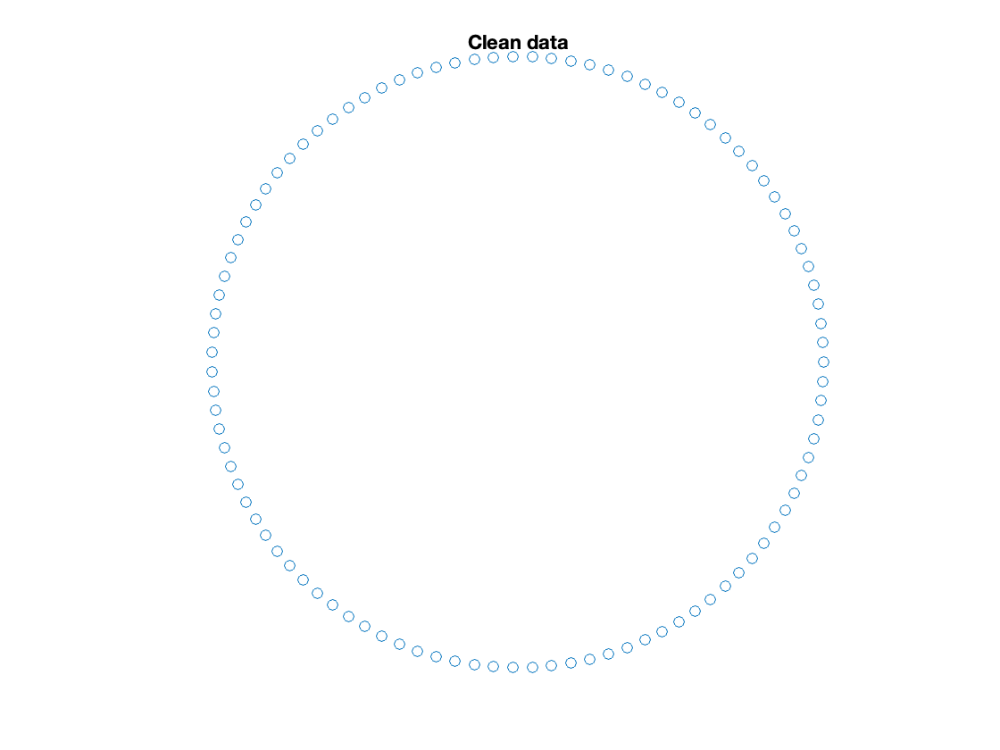
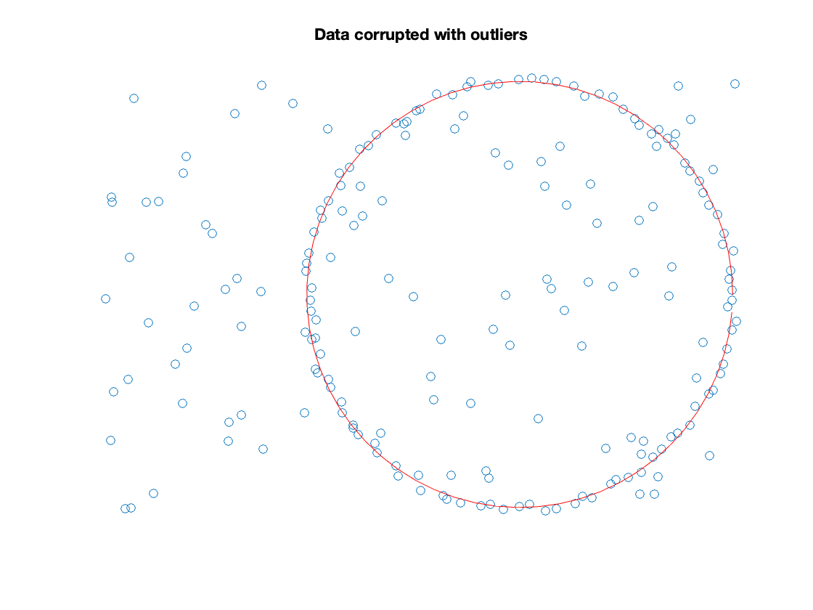
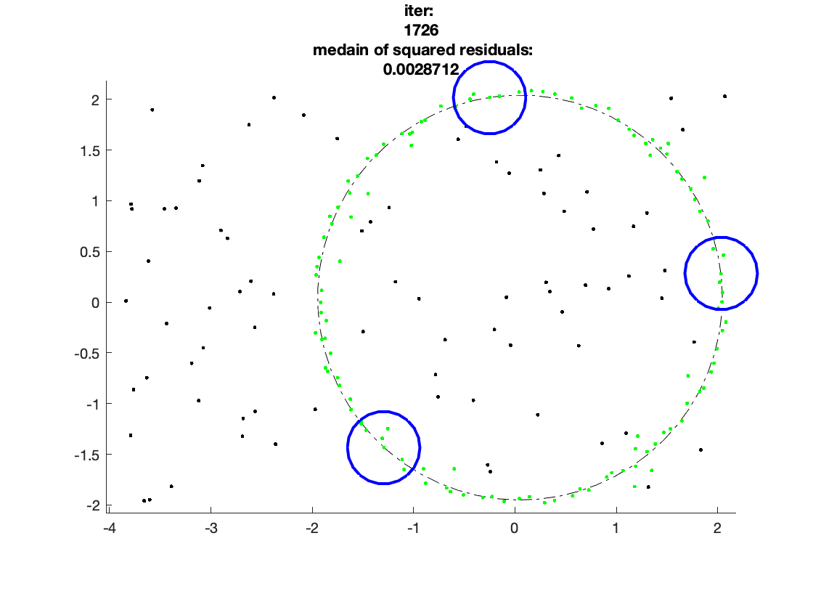
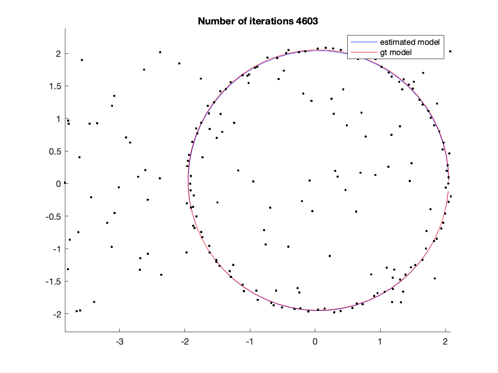

Contents
addpath('model_spec/');
close all;
clear variables;
create data
num_inliers = 100;
rho = 2;
theta = linspace(0,2*pi, num_inliers);
X = [rho*cos(theta); rho*sin(theta)];
figure;
scatter(X(1,:),X(2,:));
axis off;
axis equal;
title('Clean data');
sigma = 0.1;
X = X+sigma*rand(size(X));
model_gt = fit_circle(X);
figure;
hold all;
scatter(X(1,:),X(2,:));
drawCircle(model_gt(1),model_gt(2),model_gt(3),'r');
axis off;
axis equal;
title('Noisy data')
num_outliers = num_inliers;
if(num_inliers/num_outliers<0.5)
warning('LMEDS assumes that at least half of the data is composed by inliers')
end
minx = 2*min(X(1,:));
maxx = max(X(1,:));
miny = min(X(2,:));
maxy = max(X(2,:));
Y = [(maxx -minx).*rand(1,num_outliers) + minx; (maxy-miny)*rand(1,num_outliers) + miny];
X = [X,Y];
figure;
hold all;
scatter(X(1,:),X(2,:));
drawCircle(model_gt(1),model_gt(2),model_gt(3),'r');
axis off;
axis equal;
title('Data corrupted with outliers')



perform MSAC to estimate a circle
do_show = 1;
modelfit = @fit_circle;
modeldist = @dist_circle;
p = 3;
n = size(X,2);
alpha = 0.99;
f = 0.1 ;
MaxIterations = max( ceil(log(1-alpha)/log(1-f^p)), 100);
mincost = Inf;
for i = 1:MaxIterations
mss = randsample(n, p);
model = modelfit(X(:,mss));
sqres = modeldist(model, X).^2;
cost = median(sqres);
scale = 1.4826*sqrt(cost)*(1+5/(length(sqres)-p));
inliers = sqres < (2.5*scale)^2 ;
if cost < mincost
mincost = cost;
bestmodel = model;
bestinliers = inliers;
if(do_show)
figure(99)
clf;
hold all;
drawCircle( model(1),model(2),model(3));
scatter(X(1,:),X(2,:),'k.');
scatter(X(1,inliers),X(2,inliers),'g.');
plot(X(1,mss),X(2,mss),'bo','MarkerSize',50,'LineWidth',2);
axis equal;
title(["iter: ", num2str(i)," medain of squared residuals:", num2str(mincost)]);
xlim([minx-0.1,maxx+0.1])
ylim([miny-0.1,maxy+0.1])
pause
end
end
end

Visualize the solution
figure
hold all;
drawCircle( bestmodel(1),bestmodel(2),bestmodel(3),'b');
drawCircle( model_gt(1),model_gt(2),model_gt(3),'r');
scatter(X(1,:),X(2,:),'k.');
title(['Number of iterations ', num2str(i)]);
legend('estimated model', 'gt model');
axis equal;
